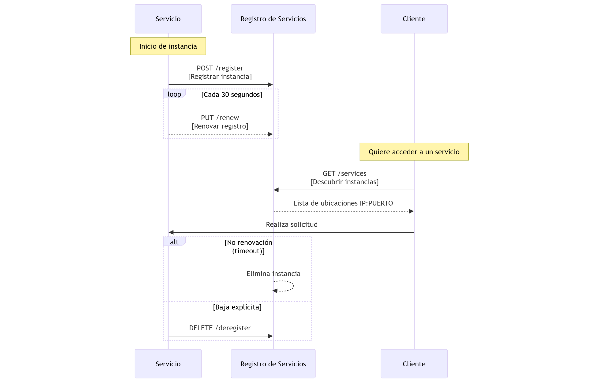
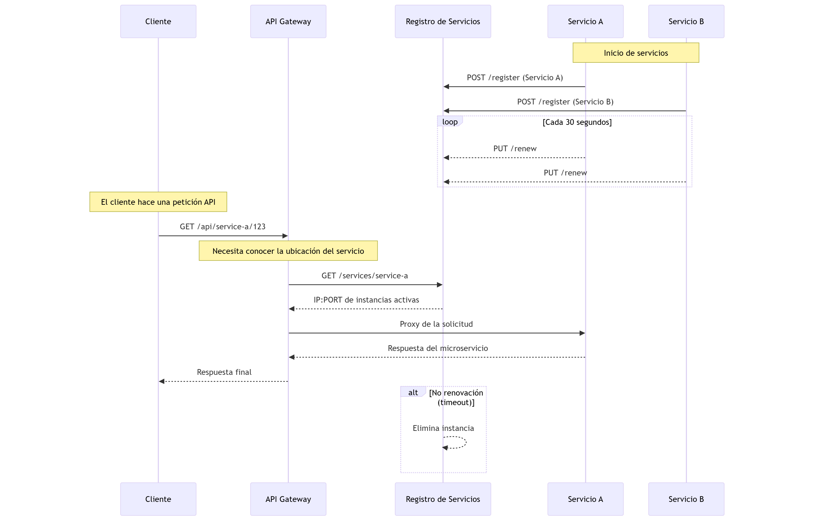

1.11 Introduccin a patrones como API Gateway, Service Discovery, y Service Registry
API Gateway
- Cuando eliges construir un conjunto de microservicios necesitas
decidir cmo quieres que tus aplicaciones interacten con los
microservicios.
- En una arquitectura de microserivcios, cada servicio se expone como un
conjunto de endpoints.
Imaginemos que desarrollamos una cliente mvil nativo para una
aplicacin de compras. Es muy probable que tengas una vista detalle de
cada uno de los productos.
Y, aunque sea un mvil, seguramente habr un montn de detalles que
mostrarn mucha informacin. No slo habr nombre de producto,
descripcin, precio, etc.
Sino que habr una serie de items como:
- Nmero de productos en el carrito de compras
- Opiniones de clientes
- Opciones de compra
- Recomendaciones de otros productos
- Varias opciones de compra.
- ...
En arquitectura monoltica, el cliente mvil trae los datos con una
simple llamada REST como:
GET api.company.com/productdetails/productId
El balanceador de carga enruta la peticin hacia varias instancias
idnticas. Entonces se hacen varias queries a la base de datos y se
retorna la informacin.
Pero, cuando usas arquitectura de microservicios los datos del
detalle de los productos son mostrados a travs de mltiples
microservicios.
Necesitamos saber cmo el cliente accede a esos servicios. Existen dos
patrones:
- Direct Client-to-Microservice Communication: cada microservicio
tendr un endpoint pblico.
- Esto puede representar un problema porque en este ejemplo haramos 7
llamadas. Pues por ejemplo, con Amazon, hay cientos de
microservicios involucrados en renderiza la pgina de un producto.
- Dificultad al refactorizar microservicios. Por ejemplo, habr
servicios que habr que dividir.
- La otra forma ser usando un API Gateway: es un servidor que tiene
un nico punto de entrada al sistema. El AG encapsula la arquitectura
interna y encauza todas las peticiones a los endpoints para cada
microservicio. Tiene otras caractersticas como autenticacin,
monitorizacin, balanceador de carga, etc.
El API Gateway es responsable del enrutamiento de solicitudes,
la composicin y la traduccin de protocolos.
Todas las peticiones de los clientes pasan primero por el API Gateway,
que luego las enruta al microservicio apropiado.
- A menudo, el API Gateway maneja una solicitud invocando mltiples microservicios y agregando los resultados.
- Tambin puede traducir entre protocolos web como HTTP y WebSocket, y protocolos no orientados a la web que se usan internamente.
El API Gateway tambin puede proporcionar a cada cliente una API
personalizada.
Normalmente expone una API de alto nivel (coarse-grained) para
clientes mviles.
- Por ejemplo, en el caso de mostrar los detalles de un producto, el API Gateway puede ofrecer un endpoint: (/productdetails?productid=xxx) que permita a un cliente mvil obtener todos los detalles del producto con una sola solicitud.
El API Gateway maneja esta peticin invocando diversos servicios
---informacin del producto, recomendaciones, reseas,
etc.--- y combinando los resultados.
Un gran ejemplo de API Gateway es Netflix API
Gateway

Service Discovery y Service Registry
El API Gateway necesita conocer la ubicacin (direccin IP y puerto)
de cada microservicio con el que se comunica.
- En una aplicacin tradicional, probablemente podras codificar estas ubicaciones de forma esttica.
- Pero en una aplicacin moderna de microservicios basada en la nube, encontrar las ubicaciones necesarias no es un problema trivial.
Los servicios de infraestructura, como un broker de mensajera,
suelen tener una ubicacin esttica, que puede especificarse mediante
variables de entorno del sistema operativo.
Sin embargo, determinar la ubicacin de un servicio de aplicacin no
es tan sencillo.
Los servicios de aplicacin tienen ubicaciones asignadas
dinmicamente.
Adems, el conjunto de instancias de un servicio cambia dinmicamente
debido a escalado automtico y actualizaciones.
Como resultado, el API Gateway ---igual que cualquier otro cliente de
servicios en el sistema--- necesita utilizar el mecanismo de
descubrimiento de servicios del sistema, ya sea:
- Descubrimiento del lado del servidor (server-side discovery), o
- Descubrimiento del lado del cliente (client-side discovery).
- Por ahora, es importante sealar que si el sistema utiliza descubrimiento del lado del cliente, entonces el API Gateway debe ser capaz de consultar el registro de servicios, que es una base de datos con todas las instancias de microservicios y sus ubicaciones.
El registro de servicios es una parte clave del descubrimiento de
servicios.
Se trata de una base de datos que contiene las ubicaciones en red de
las instancias de servicio.
- Un registro de servicios debe ser altamente disponible y estar actualizado en todo momento.
- Los clientes pueden almacenar en cach las ubicaciones obtenidas del registro, pero esa informacin acaba desactualizndose, y los clientes podran dejar de poder descubrir nuevas instancias.
Por tanto, un registro de servicios est compuesto por un clster de
servidores que utilizan un protocolo de replicacin para mantener
la consistencia de los datos.
Como se mencion anteriormente, Netflix Eureka es un buen ejemplo de
registro de servicios.
Proporciona una API REST para registrar y consultar instancias de
servicio.
- Una instancia de servicio registra su ubicacin de red mediante
una peticin POST.
- Cada 30 segundos, debe renovar su registro con una peticin
PUT.
- Un registro puede eliminarse usando una peticin
DELETE o por
timeout si no se renueva a tiempo.
- Como es de esperar, un cliente puede obtener las instancias
registradas mediante una peticin GET.

Tambin podemos ver el diagrama junto al AG:
